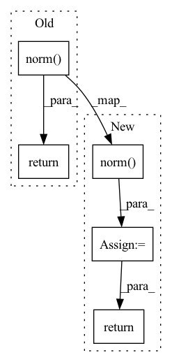

Pattern ID :299
Before Change
U_t, _, _ = torch.svd(f_t.t())
P_s, cosine, P_t = torch.svd(torch.mm(U_s.t(), U_t))
sine = torch.sqrt(1 - torch.pow(cosine, 2))
return torch.norm(sine, 1) + self.trade_off * torch.norm( torch.abs(P_s) - torch.abs(P_t), 2) After Change
P_s, cosine, P_t = torch.svd(torch.mm(U_s.t(), U_t))
sine = torch.sqrt(1 - torch.pow(cosine, 2))
rsd = torch.norm(sine, 1) // Representation Subspace Distance
bmp = torch.norm( torch.abs(P_s) - torch.abs(P_t), 2) // Base Mismatch Penalization
return rsd + self.trade_off * bmpIn pattern: SUPERPATTERN
Frequency: 3
Non-data size: 5
Instances Fragment ID: 1240858
Project Name: thuml/transfer-learning-library
Commit Name: 979fd077896648e2fac862c8a56ae6a03e126392
Time: 2021-08-11
Author: 13126830206@163.com
File Name: dalib/adaptation/rsd.py
M Class Name: RepresentationSubspaceDistance
N Class Name: RepresentationSubspaceDistance
M Method Name: forward(3)
N Method Name: forward(3)
M Parent Class: nn.Module
N Parent Class: nn.Module
M File Name: dalib/adaptation/rsd.py
N File Name: dalib/adaptation/rsd.py
M Start Line: 14
M End Line: 16
N Start Line: 26
N End Line: 30
Before Change
self.fn = fn
def forward(self, x, **kwargs):
return self.fn(self.norm( x) , **kwargs)
// feed forward
After Change
self.fn = fn
def forward(self, x, **kwargs):
x = self.norm( x)
x = self.fn(x, **kwargs)
return self.norm_out(x)
// feed forward
Fragment ID: 1240859
Project Name: lucidrains/dalle-pytorch
Commit Name: e4e101f48badcc219696d1945a5004e060a71d7c
Time: 2021-10-19
Author: lucidrains@gmail.com
File Name: dalle_pytorch/transformer.py
M Class Name: PreNorm
N Class Name: PreNorm
M Method Name: forward(2)
N Method Name: forward(2)
M Parent Class: nn.Module
N Parent Class: nn.Module
M File Name: dalle_pytorch/transformer.py
N File Name: dalle_pytorch/transformer.py
M Start Line: 65
M End Line: 65
N Start Line: 66
N End Line: 68
Before Change
x = attn(x, mask = mask, attn_bias = attn_bias) + x
x = ff(x) + x
return self.norm( x)
class DiffusionPriorNetwork(nn.Module):
def __init__(
self,After Change
x = attn(x, mask = mask, attn_bias = attn_bias) + x
x = ff(x) + x
out = self.norm( x)
return self.project_out(out)
class DiffusionPriorNetwork(nn.Module):
def __init__( Fragment ID: 1240860
Project Name: lucidrains/dalle2-pytorch
Commit Name: 46cef31c86383f2339750883b3be655c56906576
Time: 2022-04-22
Author: lucidrains@gmail.com
File Name: dalle2_pytorch/dalle2_pytorch.py
M Class Name: CausalTransformer
N Class Name: CausalTransformer
M Method Name: forward(3)
N Method Name: forward(3)
M Parent Class: nn.Module
N Parent Class: nn.Module
M File Name: dalle2_pytorch/dalle2_pytorch.py
N File Name: dalle2_pytorch/dalle2_pytorch.py
M Start Line: 378
M End Line: 380
N Start Line: 380
N End Line: 383